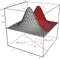
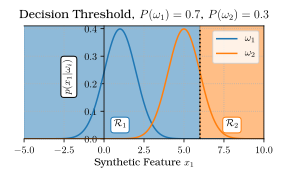
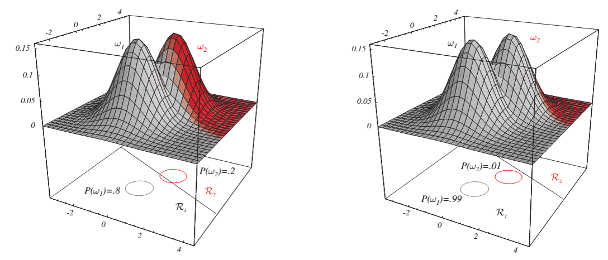
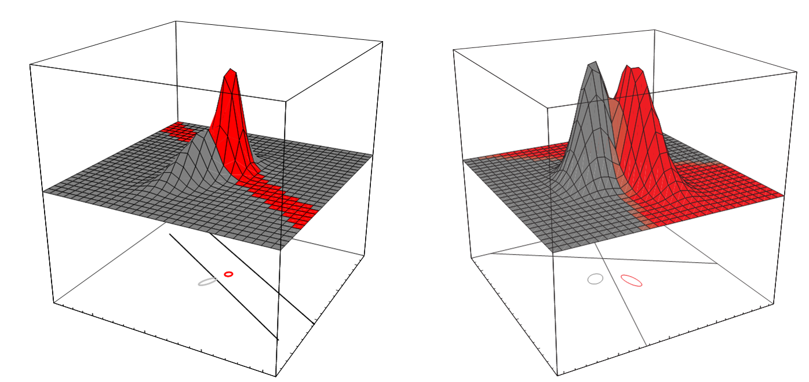

Bayes Theory
Machine Learning for Biomedical Data
Scott Doyle / scottdoy@buffalo.edu
Announcements
First Assignment
First assignment instructions will be up by the end of the day!Due date: Tuesday, Feb. 25
Goal: Choose a dataset and perform some preliminary, exploratory analysis of the data.
Use either public datasets or your own research data (with permission of your PI).
Dataset Sources
- UC Irvine Machine Learning Repository (https://archive.ics.uci.edu/ml/index.php)
- R Datasets on Github (https://vincentarelbundock.github.io/Rdatasets/)
- Kaggle Datasets: (https://www.kaggle.com/datasets)
- Awesome Lists: Public Datasets (https://github.com/caesar0301/awesome-public-datasets)
- Yahoo! Webscope Datasets (https://webscope.sandbox.yahoo.com/)
- Reddit: /r/datasets (https://www.reddit.com/r/datasets)
First Assignment: Dataset Selection Tips
Things you should look for:
- Well-documented: How was it collected? Who owns it? Are there any publications that use this dataset?
- Good Size: How many classes and observations are there? What is the distribution across the classes? How many features are there relative to the number of observations?
- Annotated: Are there labels? Who provided them? Are the labels assigned by an expert? Are they noisy, approximate, or exact?
- Feature Types: What are the format of the features? (HINT: Look for features that are continuous, not categorical or binary!)
Datasets of unlabeled data (e.g. text corpora and raw images) should be avoided.
PDF Lectures
PDF versions of the previous lectures are up on UBLearns.
These lectures may not look as well-formatted as the website, but they should be understandable.
Link to Lecture Page
A link to the lecture page has been added to scottdoy.com.
Normal (Gaussian) Distribution
Simple, Common Model Parametric Model
Revisiting the Normal Density
The normal or Gaussian density is a good model for a lot of phenomena, so we will discuss it in some length.
- Univariate: “One Variable” (a one-dimensional function)
- Multivariate: “Multiple Variable” (more than one dimensions)
Normal Density Diagram

Normal Density Formula
The normal distribution:
$ p(x) = \frac{1}{\sqrt{2\pi}\sigma}\exp{\left[-\frac{1}{2}\left(\frac{x-\mu}{\sigma}\right)^{2}\right]}$
This is a parameterized distribution.
What does that mean?
Definition of Parameters
Parameters are places in a function where you can plug in different numbers and get different “versions” of the distribution.
The set of parameters $\boldsymbol{\theta}$ are all you need to replicate a parametric function.
The normal density is parameterized by the mean and standard deviation:
$ p(x) \sim N(\mu,\sigma^{2}) $
Normal Density Parameters
The mean, $\mu$, is defined as the expected value of $x$:
$ \mu \equiv \mathcal{E}\left[x\right]=\int_{-\infty}^{\infty}xp(x)dx $
The variance (standard deviation squared) is:
$\sigma^{2} \equiv \mathcal{E}\left[(x-\mu)^{2}\right] = \int_{-\infty}^{\infty} (x-\mu)^{2} p(x)dx$
Using the Normal Distribution
Why is the normal in particular so useful? According to Wikipedia:
Of all probability distributions over the reals with a specified mean $\mu$ and variance $\sigma^{2}$, the normal distribution $N(\mu, \sigma^{2})$ is the one with maximum entropy.
Okay… so then what does maximum entropy mean?
Information Entropy
Definition of Entropy
Entropy is a measure of randomness in a sequence.
If our random variable $x$ can take on one of $m$ values, $\{v_{1},v_{2},\ldots,v_{m}\}$, and value $v_{i}$ has an associated probability $P_{i}$, then the measure of randomness is given as:
$ H = -\sum_{i=1}^{m}P_{i}\log_{2}P_{i} $
In this discrete case, entropy is measured in bits using the base 2 logarithm.
In the continuous case, entropy is measured in nats using the natural logarithm, and would be calculated using an integral instead of a sum.
Example of Entropy
Example: Let’s say $x\in\{0,1,\ldots,7\}$, and each value is equally likely.
There are eight digits, so the probability of any individual value appearing, $p_{i}$, is $\frac{1}{8}$.
In this case, the entropy is calculated as:
$ H=-\sum_{i=0}^{7}\frac{1}{8}\log_{2}\left[\frac{1}{8}\right] = \log_{2}\left[2^{3}\right] = 3 \textrm{ bits} $
Indeed, in base 2 (binary) we need a minimum of 3 bits to encode all possible values:
$ \underbrace{000}_{0} \quad \underbrace{001}_{1}\quad\underbrace{010}_{2}\quad\underbrace{011}_{3}\quad\underbrace{100}_{4}\quad\underbrace{101}_{5}\quad\underbrace{110}_{6}\quad\underbrace{111}_{7} $
Entropy and the Normal Distribution
If each of our values $\{v_{1},v_{2},\ldots,v_{m}\}$ is equally likely to appear, they are said to be drawn from a uniform distribution.
Since each observation holds no information about the next, the uniform distribution has the maximum entropy of all distributions with a given mean and variance.
Why is Maximum Entropy a Good Thing?
There are a lot of mathy ways to say this, but the reason we want a probability distribution with maximum entropy is that it means we are making as few assumptions as possible about the data.
For example: If I know that the average nuclei radius is $10\mu m$, it’s reasonable to assume that an $8\mu m$ nucleus is just as likely as a $12\mu m$ one.
Central Limit Theorem
Recall the Central Limit Theorem:
If a random variable is observed a large number of times, and the variable has a known mean and standard deviation, the average of the observations will approximate a normal distribution.
Entropy and the Normal Distribution
In many cases, we can safely assume that feature values are drawn from a uniform distribution.
The Central Limit Theorem tells us that because of this, the probability distribution over a large number of samples can be modeled as a normal distribution.
So all of this means that $p(x|\omega_{j})$ takes the form:
$ p(x|\omega_{j}) = \frac{1}{\sqrt{2\pi}\sigma}\exp{\left[-\frac{1}{2}\left(\frac{x-\mu}{\sigma}\right)^{2}\right]}$
Multivariate Normal Distributions
Multivariate Normal Distribution
So far, we have been talking about a single variable or feature, $x$. But what if we have multiple features?
If we have a $d$-dimensional feature vector $\mathbf{x}=(x_{1},x_{2},\ldots,x_{d})^{T}$, and each component is statistically independent, then the probability of observing $\mathbf{x}$ is the product of the probabilities of observing each individual event:
$ p(\mathbf{x}) = \prod_{i=1}^{d}p(x_{i}) $
Multivariate Normal Distribution
Since each component of $\mathbf{x}$ can be modeled as a normally-distributed random variable, then $p(\mathbf{x})$ is the product of $d$ Gaussians:
$ p(\mathbf{x}) = \prod_{i=1}^{d}\frac{1}{\sqrt{2\pi}\sigma_{i}}\exp{\left[-\frac{1}{2}\left(\frac{x_{i}-\mu_{i}}{\sigma_{i}}\right)^{2}\right]} $
We can simplify this by distributing the product inside:
$ p(\mathbf{x}) = \frac{1}{(2\pi)^{\frac{d}{2}} \prod_{i=1}^{d} \sigma_{i}} \exp{\left[-\frac{1}{2} \sum_{i=1}^{d} \left(\frac{x_{i}-\mu_{i}}{\sigma_{i}}\right)^{2} \right]}$
Multivariate Normal Distribution
$ p(\mathbf{x}) = \frac{1}{(2\pi)^{\frac{d}{2}} \prod_{i=1}^{d} \sigma_{i}} \exp{\left[-\frac{1}{2} \sum_{i=1}^{d} \left(\frac{x_{i}-\mu_{i}}{\sigma_{i}}\right)^{2} \right]}$
We can simplify even further by replacing the red components with the covariance matrix $\boldsymbol{\Sigma}$ and mean vector $\boldsymbol{\mu}$.
Review of Covariance
Remember: for two random variables $x_{i}$ and $x_{j}$, we can calculate the covariance or “cross-moment” to measure statistical independence:
$ \sigma_{ij} = \mathcal{E}\left[(x_{i}-\mu_{i})(x_{j}-\mu_{j})\right] $
“Covariance” is a measure of how much two random variables change together. If the covariance is zero, i.e. $\sigma_{ij}=0$, then the two variables do not change together and they are uncorrelated.
When $i=j$, the “co”-variance is just the variance (how much the variable changes from the mean), which we’ve defined as:
$ \sigma_{ii} = \mathcal{E}\left[(x_{i}-\mu_{i})(x_{i}-\mu_{i})\right] = \mathcal{E}\left[(x_{i}-\mu_{i})^{2}\right] $
Covariance Matrix
The covariance matrix $\boldsymbol{\Sigma}$ just collects each of the covariances. It is a square matrix whose $ij$-th element is $\sigma_{ij}$:
$ \boldsymbol{\Sigma} = \begin{bmatrix} \sigma_{11} & \sigma_{12} & \cdots & \sigma_{1d} \\ \sigma_{21} & \sigma_{22} & \cdots & \sigma_{2d} \\ \vdots & \vdots & \ddots & \vdots \\ \sigma_{d1} & \sigma_{d2} & \cdots & \sigma_{dd} \end{bmatrix}$
Covariance Matrix
If we assume each dimension in $\mathbf{x}$ is uncorrelated, then $\sigma_{ij}=0$ for all $i\neq j$, so the matrix becomes a diagonal matrix:
$ \boldsymbol{\Sigma} = \begin{bmatrix} \sigma_{11} & 0 & \cdots & 0 \\ 0 & \sigma_{22} & \cdots & 0 \\ \vdots & \vdots & \ddots & \vdots \\ 0 & 0 & \cdots & \sigma_{dd} \end{bmatrix} $
Inverse of the Covariance Matrix
The inverse of a matrix $\mathbf{M}$ is one where $\mathbf{MM}^{-1} = \mathbf{I}$ (the identity matrix).
Hence, we can easily calculate $\boldsymbol{\Sigma}^{-1}$ as:
$ \boldsymbol{\Sigma}^{-1} = \begin{bmatrix} \frac{1}{\sigma_{11}} & 0 & \cdots & 0 \\ 0 & \frac{1}{\sigma_{22}} & \cdots & 0 \\ \vdots & \vdots & \ddots & \vdots \\ 0 & 0 & \cdots & \frac{1}{\sigma_{dd}} \end{bmatrix} $
Note: The inverse of a matrix is not usually just 1 divided by each element. It just works out because $\boldsymbol{\Sigma}$ is diagonal, in the case where all dimensions are uncorrelated.
Calculating the Covariance Determinant
Finally, the determinant of $\boldsymbol{\Sigma}$ is the product of the variances:
$ |\boldsymbol{\Sigma}| = \sigma_{11}\sigma_{22}\cdots\sigma_{dd} $
The rest of the terms disappear because they all contain zeroes.
Simplified Multivariate Normal Equation
Thus we can rewrite this:
$ p(\mathbf{x}) = \frac{1}{(2\pi)^{\frac{d}{2}} \prod_{i=1}^{d} \sigma_{i}} \exp{\left[-\frac{1}{2} \sum_{i=1}^{d} \left(\frac{x_{i}-\mu_{i}}{\sigma_{i}}\right)^{2} \right]} $
… like this:
$ p(\mathbf{x}) = \frac{1}{(2\pi)^{\frac{d}{2}} |\boldsymbol{\Sigma}|^{\frac{1}{2}}} \exp{\left[-\frac{1}{2} (\mathbf{x}-\boldsymbol{\mu})^{T} \boldsymbol{\Sigma}^{-1} (\mathbf{x}-\boldsymbol{\mu}) \right]} $
Explanation of Multivariate Normal Distribution
$ p(\mathbf{x}) = \frac{1}{(2\pi)^{\frac{d}{2}} |\boldsymbol{\Sigma}|^{\frac{1}{2}}} \exp{\left[-\frac{1}{2} (\mathbf{x}-\boldsymbol{\mu})^{T} \boldsymbol{\Sigma}^{-1} (\mathbf{x}-\boldsymbol{\mu}) \right]} $
This function combines multiple normally-distributed random variables (components of $\mathbf{x}$), each of which has its own mean and variance.
In terms of expected values, the mean and covariance can be written as:
$ \boldsymbol{\mu} \equiv \mathcal{E}\left[\mathbf{x}\right] = \int\mathbf{x}p(\mathbf{x})d\mathbf{x} $
$ \boldsymbol{\Sigma} \equiv \mathcal{E}\left[(\mathbf{x}-\boldsymbol{\mu})(\mathbf{x}-\boldsymbol{\mu})^{T}\right] = \int (\mathbf{x}-\boldsymbol{\mu})(\mathbf{x}-\boldsymbol{\mu})^{T}p(\mathbf{x})d\mathbf{x} $
Multivariate Normal Distribution
$ p(\mathbf{x}) = \frac{1}{(2\pi)^{\frac{d}{2}} |\boldsymbol{\Sigma}|^{\frac{1}{2}}} \exp{\left[-\frac{1}{2} (\mathbf{x}-\boldsymbol{\mu})^{T} \boldsymbol{\Sigma}^{-1} (\mathbf{x}-\boldsymbol{\mu}) \right]} $
How many components does $\boldsymbol{\mu}$ have?
$d$, which is the same as $\mathbf{x}$
What are the values of these components?
$\mu_{i} = \mathcal{E}\left[x_{i}\right]$
What is the dimensionality of $\boldsymbol{\Sigma}$?
- $\mathbf{x}-\boldsymbol{\mu}=$ a $d$-dimensional vector
- $(\mathbf{x}-\boldsymbol{\mu})(\mathbf{x}-\boldsymbol{\mu})^{T}=\mathbf{M}$, a $d\times d$ dimensional vector
Visualizing Multivariate Distributions
Transforms of Normal Distributions
Linear Transforms

Linear transforms of normal distribuion are also normally distributed.
Linear Transforms

If $\mathbf{A}$ is a $d$-by-$k$ transformation matrix and $\mathbf{y}=\mathbf{A}^{T}\mathbf{x}$ is a $k$-component vector, then:
$ p(\mathbf{y}) \sim N(\mathbf{A}^{T} \boldsymbol{\mu},\mathbf{A}^{T} \boldsymbol{\Sigma}\mathbf{A}) $
This results in another normal distribution.
Projections of Normals onto a Line

If $k=1$, then $\mathbf{A}$ is a unit-length vector $\mathbf{a}$, and so $y=\mathbf{a}^{T}\mathbf{x}$ is a scalar (dot product!) that represents the projection of $\mathbf{x}$ onto the line represented by $\mathbf{a}$.
Now $p(y)$ is a univariate normal distribution with a mean of $\mathbf{a}^{T}\boldsymbol{\mu}$ and a variance of a $\mathbf{a}^{T}\boldsymbol{\Sigma}\mathbf{a}$.
Whitening Transform

The “whitening” transform, $\mathbf{A}_{w}$ is a special projection that makes an arbitrary distribution $p(\mathbf{x})$ into a spherical one (i.e. its covariance matrix is the identiy matrix).
Define $\boldsymbol{\Phi}$ as the matrix whose columns are the eigenvectors of $\boldsymbol{\Sigma}$, and $\boldsymbol{\Lambda}$ is a diagonal matrix of corresponding eigenvalues.
Whitening Transform

$ \mathbf{A}_{w} = \boldsymbol{\Phi}\boldsymbol{\Lambda}^{\frac{1}{2}} $
The resulting distribution $p(\mathbf{w})$ has a covariance equal to 1 along each component.
Why would we do this?
Feature scaling: It can help to get all features into a similar arrangement such as a spherical multivariate distribution.
Gaussian Discriminant Functions
Discriminant Functions Revisited
Remember how we created a bunch of forms of the discriminant function?
The idea is that as long as the equation gives us higher values for the desired class, the form can be anything we want.
One of the forms was a natural log of the probabilities:
$ g_{i}(\mathbf{x}) = \ln{p(\mathbf{x}|\omega_{i})} + \ln{P(\omega_{i})} $
Discriminant Functions Simplified
$ g_{i}(\mathbf{x}) = \ln{p(\mathbf{x}|\omega_{i})} + \ln{P(\omega_{i})} $
If we assume that $p(\mathbf{x}|\omega_{i}) \sim N(\boldsymbol{\mu}_{i},\boldsymbol{\Sigma}_{i})$, then we can plug the multivariate normal distribution function into the above equation:
$ g_{i}(\mathbf{x}) = \ln{\left[\frac{1}{ (2\pi)^{\frac{d}{2}} |\boldsymbol{\Sigma}|^{\frac{1}{2}} }\exp{\left[-\frac{1}{2}(\mathbf{x}-\boldsymbol{\mu})^{T} \boldsymbol{\Sigma}^{-1} (\mathbf{x}-\boldsymbol{\mu}) \right]}\right]} + \ln{P(\omega_{i})} $
$ g_{i}(\mathbf{x}) = -\frac{1}{2}(\mathbf{x}-\boldsymbol{\mu}_{i})^{T} \boldsymbol{\Sigma}_{i}^{-1} (\mathbf{x}-\boldsymbol{\mu}_{i}) - \frac{d}{2}\ln{2\pi} - \frac{1}{2}\ln{|\boldsymbol{\Sigma}|} + \ln{P(\omega_{i})} $
Discriminant Functions Revisited
Let’s examine our discriminant functions under two conditions:
- All classes and features are assumed to have the same variance ($\boldsymbol{\sigma_{i}}=\sigma^{2}\boldsymbol{I}$), and
- Classes and features have arbitrary variances.
In the first case, we can make some simplifying assumptions to help us draw decision boundaries.
In the second, we cannot assume anything about the form of the discriminant functions.
Equal Variances
Discriminant Function When $\boldsymbol{\Sigma}_{i} = \sigma^{2}\boldsymbol{I}$
In the equal variances case, components of $\mathbf{x}$ are independent and have the same variance, $\sigma^{2}$.
Each class falls into a hypersphere in $d$ dimensions, and each class is clustered around the corresponding mean vector $\boldsymbol{\mu}_{i}$.
(Think of each class as a perfectly round blob in $d$-dimensional space.)
Discriminant Function When $\boldsymbol{\Sigma}_{i} = \sigma^{2}\boldsymbol{I}$
Here’s our discriminant function again:
$ g_{i}(\mathbf{x}) = -\frac{1}{2}(\mathbf{x}-\boldsymbol{\mu}_{i})^{T} \boldsymbol{\Sigma}_{i}^{-1}(\mathbf{x}-\boldsymbol{\mu}_{i})-\frac{d}{2}\ln{2\pi}-\frac{1}{2}\ln{|\boldsymbol{\Sigma}|}+\ln{P(\omega_{i})} $
Since $\boldsymbol{\Sigma}_{i}=\sigma^{2}\mathbf{I}$, the determinant is just $|\boldsymbol{\Sigma}_{i}|=\sigma^{2d}$ and the inverse is $\boldsymbol{\Sigma}_{i}^{-1}=(\frac{1}{\sigma^{2}})\mathbf{I}$.
$ g_{i}(\mathbf{x}) = -\frac{(\mathbf{x}-\boldsymbol{\mu}_{i})^{T} (\mathbf{x}-\boldsymbol{\mu}_{i})}{2\sigma^{2}}-\frac{d}{2}\ln{2\pi}-\frac{1}{2}\ln{|\boldsymbol{\Sigma}|}+\ln{P(\omega_{i})} $
Discriminant Function When $\boldsymbol{\Sigma}_{i} = \sigma^{2}\boldsymbol{I}$
$ g_{i}(\mathbf{x}) = -\frac{(\mathbf{x}-\boldsymbol{\mu}_{i})^{T} (\mathbf{x}-\boldsymbol{\mu}_{i})}{2\sigma^{2}}-\frac{d}{2}\ln{2\pi}-\frac{1}{2}\ln{|\boldsymbol{\Sigma}|}+\ln{P(\omega_{i})} $
Terms independent of $i$ can be dropped, so the discriminant function reduces to:
$ g_{i}(\mathbf{x}) = -\frac{(\mathbf{x}-\boldsymbol{\mu}_{i})^{T} (\mathbf{x}-\boldsymbol{\mu}_{i})}{2\sigma^{2}} +\ln{P(\omega_{i})} $
Expanding $(\mathbf{x}-\boldsymbol{\mu}_{i})^{T} (\mathbf{x}-\boldsymbol{\mu}_{i})$ gives:
$ g_{i}(\mathbf{x}) = - \frac{1}{2\sigma^{2}} \left[\mathbf{x}^{T}\mathbf{x} -2\boldsymbol{\mu}_{i}^{T} \mathbf{x} +\boldsymbol{\mu}_{i}^{T} \boldsymbol{\mu}_{i}\right] + \ln{P(\omega_{i})} $
Discriminant Function When $\boldsymbol{\Sigma}_{i} = \sigma^{2}\boldsymbol{I}$
$ g_{i}(\mathbf{x}) = -\frac{1}{2\sigma^{2}}\left[\mathbf{x}^{T}\mathbf{x} -2\boldsymbol{\mu}_{i}^{T}\mathbf{x} +\boldsymbol{\mu}_{i}^{T}\boldsymbol{\mu}_{i}\right] + \ln{P(\omega_{i})} $
We can ignore $\mathbf{x}^{T}\mathbf{x}$ since it doesn’t change with $i$, so we can rewrite the above as:
$ g_{i}(\mathbf{x}) = \frac{1}{2\sigma^{2}}\left[2\boldsymbol{\mu}_{i}^{T}\mathbf{x} -\boldsymbol{\mu}_{i}^{T}\boldsymbol{\mu}_{i}\right] + \ln{P(\omega_{i})} $
Discriminant Function When $\boldsymbol{\Sigma}_{i} = \sigma^{2}\boldsymbol{I}$
With a change of variables, we can simplify further:
$ g_{i}(\mathbf{x}) = \mathbf{w}_{i}^{T} \mathbf{x} + w_{i0}$, where
$ \mathbf{w}_{i} = \frac{1}{\sigma^{2}}\boldsymbol{\mu}_{i} $
$ w_{i0} = -\frac{1}{2\sigma^{2}}\boldsymbol{\mu}_{i}^{T} \boldsymbol{\mu}_{i} +\ln{P(\omega_{i})} $
We call $w_{i0}$ the bias or threshold for the $i$-th category.
What do these functions look like?
Discriminant Function When $\boldsymbol{\Sigma}_{i} = \sigma^{2}\boldsymbol{I}$

Discriminant Function When $\boldsymbol{\Sigma}_{i} = \sigma^{2}\boldsymbol{I}$

Discriminant Function When $\boldsymbol{\Sigma}_{i} = \sigma^{2}\boldsymbol{I}$
The decision hyperplane is where:
$g_{i}(\mathbf{x})=g_{j}(\mathbf{x})$
$ \mathbf{w}_{i}^{T} \mathbf{x} + w_{i0} = \mathbf{w}_{j}^{T} \mathbf{x} + w_{j0}$
$ \frac{1}{2\sigma^{2}} \left[2\boldsymbol{\mu}_{i}^{T} \mathbf{x} -\boldsymbol{\mu}_{i}^{T}\boldsymbol{\mu}_{i}\right] + \ln{P(\omega_{i})} = \frac{1}{2\sigma^{2}} \left[2\boldsymbol{\mu}_{j}^{T} \mathbf{x} -\boldsymbol{\mu}_{j}^{T} \boldsymbol{\mu}_{j}\right] + \ln{P(\omega_{j})}$
We want to find the point, $\mathbf{x}_{0}$, where this is true.
Discriminant Function When $\boldsymbol{\Sigma}_{i} = \sigma^{2}\boldsymbol{I}$
By rearranging the equation, we get:
$ \mathbf{x}_{0} = \frac{1}{2}(\boldsymbol{\mu}_{i} + \boldsymbol{\mu}_{j}) - \frac{\sigma^{2}}{||\boldsymbol{\mu}_{i}-\boldsymbol{\mu}_{j}||^{2}} \ln{\frac{P(\omega_{i})}{P(\omega_{j})}}(\boldsymbol{\mu}_{i}-\boldsymbol{\mu}_{j}) $
Discriminant Function When $\boldsymbol{\Sigma}_{i} = \sigma^{2}\boldsymbol{I}$
$ \mathbf{x}_{0} = \frac{1}{2}(\boldsymbol{\mu}_{i} + \boldsymbol{\mu}_{j}) - \frac{\sigma^{2}}{||\boldsymbol{\mu}_{i}-\boldsymbol{\mu}_{j}||^{2}} \ln{\frac{P(\omega_{i})}{P(\omega_{j})}}(\boldsymbol{\mu}_{i}-\boldsymbol{\mu}_{j}) $
If $P(\omega_{i})=P(\omega_{j})$, then $\ln{\frac{P(\omega_{i})}{P(\omega_{j})}}=0$ and $\mathbf{x}_{0}=\frac{1}{2}(\boldsymbol{\mu}_{i}+\boldsymbol{\mu}_{j})$; in other words, it is located halfway between the means.
If $P(\omega_{i})\neq P(\omega_{j})$, then the decision boundary shifts towards the mean with the lower prior.
Why does this happen?
Discriminant Function When $\boldsymbol{\Sigma}_{i} = \sigma^{2}\boldsymbol{I}$


Discriminant Function When $\boldsymbol{\Sigma}_{i} = \sigma^{2}\boldsymbol{I}$

Discriminant Function When $\boldsymbol{\Sigma}_{i} = \sigma^{2}\boldsymbol{I}$

Arbitrary Variances
Arbitrary $\boldsymbol{\Sigma}_{i}$
If the covariance matrices for the classes are different and arbitrary, then we can only drop one term from the general discriminant function:
$ g_{i}(\mathbf{x}) = \mathbf{x}^{T} \mathbf{W}_{i}\mathbf{x} + \mathbf{w}_{i}^{T} \mathbf{x} + w_{i0} $
$ \mathbf{W}_{i} = -\frac{1}{2}\boldsymbol{\Sigma}_{i}^{-1} $
$ \mathbf{w}_{i} = \boldsymbol{\Sigma}_{i}^{-1}\boldsymbol{\mu}_{i} $
$ w_{i0} = -\frac{1}{2}\boldsymbol{\mu}_{i}^{T}\boldsymbol{\Sigma}_{i}^{-1}\boldsymbol{\mu}_{i}-\frac{1}{2}\ln{|\boldsymbol{\Sigma}_{i}|}+\ln{P(\omega_{i})} $
Arbitrary $\boldsymbol{\Sigma}_{i}$
In this case, decision surfaces are hyperquadratic and can take on all kinds of crazy shapes.
They don’t even need to be continuous regions.
Arbitrary $\boldsymbol{\Sigma}_{i}$

Arbitrary $\boldsymbol{\Sigma}_{i}$

Arbitrary $\boldsymbol{\Sigma}_{i}$

Arbitrary $\boldsymbol{\Sigma}_{i}$

Extensions to Additional Classes
The theory holds when you extend to additional classes, although the decision boundaries can get fairly complex.
Note: If you have these kinds of problems, you must be sure your training set is very good (lots of samples, good fit between samples and model, etc.)
Always remember the tradeoff of generalization vs. complexity!
Arbitrary $\boldsymbol{\sigma}_{i}$

Parting Words
Bayesian Theory Wrap-Up
Bayes forms the basis for a lot of “ideal” classifier problems.
Use this when the following conditions are met:
- You can obtain a reasonably large set of labeled training data to estimate $p(x|\omega)$
- You can estimate the distribution that characterizes $p(x|\omega)$ (it doesn’t HAVE to be normal, but it helps)
- You know what your prior $P(\omega)$ is for each class, or you can assume them to be non-informative
- You have a relatively small number of features in your dataset
Bayesian Theory Wrap-Up
Bayes gives you a very good statistical understanding of classifier performance.
If you get errors, look at your PDFs and associated feature values!
You can easily troubleshoot your system by checking your PDFs.
Next Class
Non-Metric Methods
What happens when our features are not numbers, but attribute-value pairs like “color” or “taste”?
These are not “metrics”, meaning you can’t put them in a specific order or calculate a meaningful distance between them
There’s no such thing as a distance value between “chocolate” and “vanilla”.
We can address this problem using Non-Metric methods like Decision Trees.
Tree-building methods: CART, ID3, C4.5